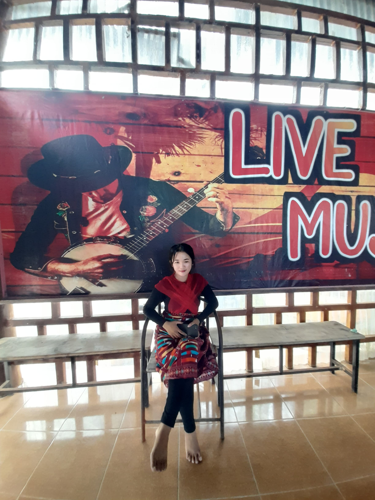

Mahasiswa Universitas Nias Raya
Perkenalkan nama saya Cantikan Putri Dachi, tempat tinggal Idala Jaya Hilisimaetano, saya berumur 19 tahun, cita-cita menjadi pengusaha dan saya ingin membahagiakan kedua orang tua saya
Tarian untuk acara temu ramah prodi sistem infromasi.
Email: cantikanputrid@gmail.com
Instagram: @cantikan dachi
Facebook: cantikan dachi